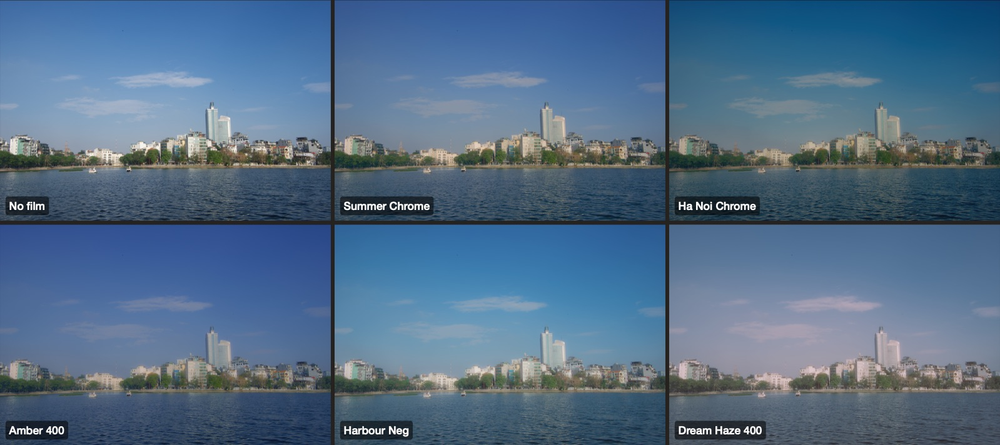

A film should change colour, not just fade it
The film colour engine went in on 11 September. Each film is a handful of colour moves (which hues turn, how quickly saturation rolls off, where the tones sit) baked into a 3D lookup table. The viewfinder, the capture and the export all run the same graph, so what you see while shooting is what you get.
The first palette mostly paled colours, which isn't what film does. Widening the chroma knee and re-authoring every film fixed that, and set a rule I still use: a film has to reinterpret hues, red toward orange and blue toward navy, not just take colour away.
